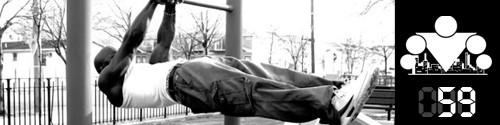
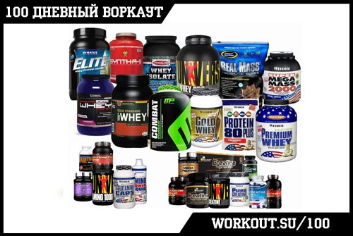

100 Дневный воркаут
<==== Вернуться к оглавлению
День 59. Зачем нужно спортивное питание?

Сегодня пришло время затронуть одну из самых неоднозначных тем, вызвавшую бурю обсуждений во время прошлого 100 дневного воркаута. Но тем не менее не рассказать о спортивном питании и добавках мы не можем, тем более, что мы уже говорили о том, что
наше тело есть ни что иное, как отражение нашего образа жизни
.
В сегодняшнем посте я поделюсь с вами своим взглядом на спортивное питание и различные БАДы и постараюсь объяснить, почему вам не стоит включать их в свой рацион, если вы не профессиональный спортсмен и не планируете зарабатывать фитнесом себе на жизнь. Одна оговорка, я не буду рассматривать вариант, когда какую-либо добавку вам нужно принимать, потому что так сказал врач или по каким-нибудь медицинским показаниям.

Этот пост будет в первую очередь посвящен тем видам добавок, которые в последнее время активно рекламируют нам в интернете и журналах в качестве отличного решения для тех, кто хочет выглядеть лучше. Самые популярные из таких добавок - протеиновые коктейли, гейнеры и жиросжигатели. Я не проводил маркетинговое исследование, но думаю, что именно эта троица делает львиную долю выручки компаниями-производителям.
Я не буду сейчас рассматривать вопрос применения добавок с точки зрения их влияния на ваше здоровье в долгосрочной перспективе. К сожалению данный вопрос в настоящее время недостаточно изучен, поэтому рано делать какие-либо выводы. Той информации, которую предоставляют компании-производители я бы не стал слишком доверять, потому что в 1950-е (если не ошибаюсь) в Америке было опубликовано достаточно большое количество исследований подтверждающих положительные эффекты табакокурения (это уже потом стали изучать связь между табаком и раком лёгких). В общем, в данном вопросе я крайне скептично отношусь к добавкам, но предлагаю каждому решать за себя. О чем я хочу поговорить сейчас, это о том, что в действительности рекламируемые препараты не смогут решить ваших проблем. И для этого я предлагаю обратиться к инфо-посту про
баланс калорий
.
Допустим некий воркаутер очень хочет набрать массу, но у него никак это не выходит. Хотя он вроде и тренируется дважды в день и кушает за семерых. Если честно, то среди молодых воркаутеров это очень распространенная ситуация. Мы с вами знаем, что чудес не бывает, и его проблема заключается в том, что у него отсутствует профицит калорий. То есть он либо кушает недостаточно, либо слишком много тренируется. Но он этого не понимает, и думая, что достиг своих генетических пределов пора уже обращать свои взоры в сторону дополнительного спортивного питания, ведь все эти рекламные объявления так заманчиво гарантируют ему набор массы в кратчайшие сроки.
Допустим он поддается на заманчивые предложения и покупает себе баночку протеина (или, того хуже, гейнера) и начинает его принимать. Что ему это дает? Очевидно, теперь он начинает получать дополнительные калории, благодаря которым он сможет создать профицит калорий, а, следовательно, начнет набирать массу. Вроде бы успех, но все не так просто.
Достигнутые результаты будут оставаться с ним только пока он принимает спортивное питание.
Если вы относитесь к тем, кто сомневается, стоит ли принимать спортивное питание или нет, то рекомендую еще раз внимательно прочитать выделенное предложение.
Поскольку профицит калорий будет обеспечиваться за счет спортивного питания, то отказ от его употребления приведет к постепенному возврату к тем результатам, которые соответствуют вашему образу жизни. Это так же неизбежно, как то, что солнце завтра взойдет на востоке, а сядет на западе. И даже если вы знаете пару историй, когда люди прекращали принимать спортивное питание, а их результаты не уходили, то причину этого нужно искать среди других факторов.
В общем, выбор у нашего гипотетического воркаутера небольшой. Либо подсесть на "протеиновую иглу" до тех пор, пока он хочет выглядеть "хорошо" (условно), либо удивляться, почему после прекращения приема питания он снова и снова возвращается к прежним результатам. Хочу отметить, что компании, производящие спортивное питание, будут очень рады, если он сделает выбор в пользу первого варианта, потому что это будет означать для них постоянный приток денежных средств от продаваемых продуктов.
Помните прекрасный пост от
yerofea
про то, что наш внешний вид является следствием нашего образа жизнй Это именно так!
Наш воркаутер понятия не имеет о том, как правильно питаться, из чего состоят продукты, сколько в них калорий и т.д.
Как бы тяжело вы не тренировались, без правильного питания достигнуть сколько-нибудь значимых результатов будет очень сложно (а иногда и просто невозможно). Поэтому наш гипотетический воркаутер после нескольких недель, месяцев или даже лет безрезультатных занятий просто напросто придет к выводу, что все это бестолку и бросит попытки достигнуть желаемого результата (скажем набрать несколько килограмм массы). Похожую ситуацию вы можете очень часто наблюдать среди посетителей фитнес клубов, которые могут месяцами ходить на тренировки и не добиваться никаких (вообще!) результатов. Потому что они не потрудились разобраться в том, как работает их организм. И так же часто фрустрации по поводу отсутствия результата приводят к тому, что люди прекращают свои занятия.
Я могу понять, зачем принимают спортивное питание спортсмены или фитнесисты, для которых их результаты или внешний вид являются способом заработка.
Это особенность их профессии, правила игры, по которым они должны играть, если хотят заниматься любимым делом и получать за это деньги. Но даже они не достигают того результата, который вы видите на фотографиях и в интернете. Потому что для того, чтобы получить одну удачную фотку на обложку нужно сделать пару сотен фотографий, из которых выбирается лучшая, и потом она еще ретушируется на компьютере. К сожалению, в этом заключается вся суть фитнес индустрии, которая пытается продать вам способ стать таким же, как красивая картинка, которой на самом деле не существует. И это не мои слова, это слова
Грега Плитта
(фитнес модель №1 в мире, 125 обложек ведущих фитнес журналов по всему миру за последние 4 года), и он знает о чем говорит.
Кстати, вот все фотографии с одной из фотосессий с ним, вроде как для
обложки журнала -
http://lianasaadi.zenfolio.com/plitt/h1B0D4594#h1b0d4594
(линк уже битый, к сожалению но суть в том, что там было около 700 почти одинаковых фотографий, из которых затем выбирается всего пара тройка лучших)
. Как вы понимаете, кадр, который попадает на обложку, всего лишь один из нескольких сотен!!!
Если вы планируете заниматься для себя, то я рекомендую задуматься над тем, нужны ли вам эти добавкй Или вы просто пытаетесь найти быстрое решение к долгосрочной проблеме? Сразу хочу вас огорчить, потому что такого решения не существует в природе, а это значит, что если вы хотите получить результаты, то придется начать менять себя и свой образ жизни. Ага, это снова возвращает нас к посту
yerofea
)
Можно ли добиться отличных результатов без добавок? Чисто за счет воркаута и питания?
Да, можно. И я лично знаю огромное количество реальных примеров людей, которым удалось. Было ли это трудно? Да, черт возьми! И чем лучше вы хотите выглядеть, чем сильнее хотите быть, тем больше времени нужно будет уделять и своим тренировкам и своему питанию. Чудес не бывает, только тяжелая работа над собой. Но, по крайней мере, воркаут позволяет сделать эту работу интересной и разнообразной)))
:
Хочется добавить, что состав БАДов и спортпита по факту в странах СНГ никто не контролирует, поэтому что находится в банке, известно одному только Богу. А находятся там в том числе и стероиды. Вот интересная
ссылка
из блога одного спортивного врача.
======> День 60. Вред алкоголя для организма человека